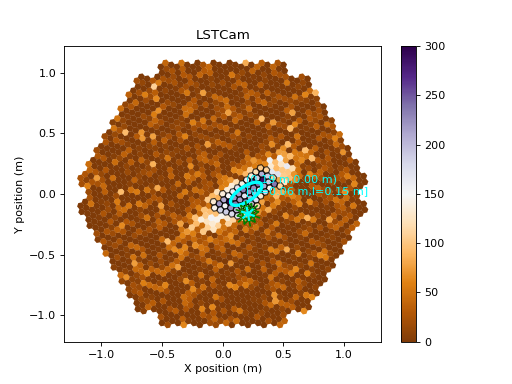
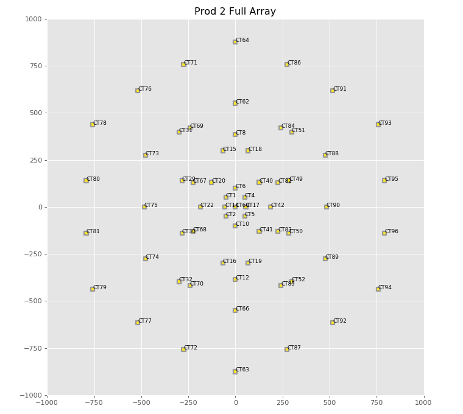

Visualization (visualization)¶
Introduction¶
This module provides methods to display various information related to events and reconstruction, like Cherenkov Camera images, image parameterizations, etc. The default implementation uses MatPlotLib to render displays, but in the future more rendering methods may be supported.
The main classes are:
Getting Started¶
#!/usr/bin/env python3
"""
Example of drawing a Camera using a toymodel shower image.
"""
import matplotlib.pylab as plt
from ctapipe.instrument import CameraGeometry
from ctapipe.visualization import CameraDisplay
from ctapipe.image import toymodel, hillas_parameters, tailcuts_clean
def draw_neighbors(geom, pixel_index, color='r', **kwargs):
"""Draw lines between a pixel and its neighbors"""
neigh = geom.neighbors[pixel_index] # neighbor indices (not pixel ids)
x, y = geom.pix_x[pixel_index].value, geom.pix_y[pixel_index].value
for nn in neigh:
nx, ny = geom.pix_x[nn].value, geom.pix_y[nn].value
plt.plot([x, nx], [y, ny], color=color, **kwargs)
if __name__ == '__main__':
# Load the camera
geom = CameraGeometry.from_name("LSTCam")
disp = CameraDisplay(geom)
disp.set_limits_minmax(0, 300)
disp.add_colorbar()
# Create a fake camera image to display:
model = toymodel.generate_2d_shower_model(centroid=(0.2, 0.0),
width=0.01,
length=0.1,
psi='35d')
image, sig, bg = toymodel.make_toymodel_shower_image(geom, model.pdf,
intensity=50,
nsb_level_pe=1000)
# Apply image cleaning
cleanmask = tailcuts_clean(geom, image, picture_thresh=200,
boundary_thresh=100)
clean = image.copy()
clean[~cleanmask] = 0.0
# Calculate image parameters
hillas = hillas_parameters(geom.pix_x, geom.pix_y, clean)
print(hillas)
# Show the camera image and overlay Hillas ellipse and clean pixels
disp.image = image
disp.cmap = 'PuOr'
disp.highlight_pixels(cleanmask, color='black')
disp.overlay_moments(hillas, color='cyan', linewidth=3)
# Draw the neighbors of pixel 100 in red, and the neighbor-neighbors in
# green
for ii in geom.neighbors[130]:
draw_neighbors(geom, ii, color='green')
draw_neighbors(geom, 130, color='cyan', lw=2)
plt.show()
(Source code, png, hires.png, pdf)
{kind=link}
{kind=link}

#!/usr/bin/env python3
from ctapipe.visualization import ArrayDisplay
from ctapipe.utils import datasets
from astropy.table import Table
from numpy import ones_like
import matplotlib.pylab as plt
if __name__ == '__main__':
plt.style.use("ggplot")
plt.figure(figsize=(9.5, 8.5))
# load up an example table that has the telescope positions and
# mirror areas in it:
arrayfile = datasets.get_dataset("PROD2_telconfig.fits.gz")
tels = Table.read(arrayfile, hdu="TELESCOPE_LEVEL0")
X = tels['TelX']
Y = tels['TelY']
A = tels['MirrorArea'] * 2 # exaggerate scale a bit
# display the array, and set the color value to 50
ad = ArrayDisplay(X, Y, A, title="Prod 2 Full Array")
ad.values = ones_like(X) * 50
# label them
for tel in tels:
name = "CT{tid}".format(tid=tel['TelID'])
plt.text(tel['TelX'], tel['TelY'], name, fontsize=8)
ad.axes.set_xlim(-1000, 1000)
ad.axes.set_ylim(-1000, 1000)
plt.tight_layout()
plt.show()
(Source code, png, hires.png, pdf)
{kind=link}
{kind=link}

Reference/API¶
ctapipe.visualization Package¶
Visualization: Methods for displaying data
Classes¶
ArrayDisplay(telx, tely[, tel_type, radius, …]) |
Display a top-town view of a telescope array |
CameraDisplay(geometry[, image, ax, title, …]) |
Camera Display using matplotlib. |